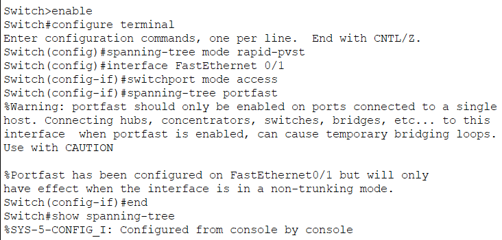

Spanning Tree Protocol (STP) is a critical Layer 2 network protocol designed to prevent loops in network topologies. It ensures a loop-free logical path by disabling redundant links while keeping them available as backups in case the primary link fails.
In redundant networks, connecting switches with multiple cables can create Broadcast Storms and MAC table instability. This happens when broadcast frames circulate endlessly through the loops, consuming all bandwidth and eventually crashing the network.
STP automatically elects a Root Bridge (a reference point for the network) and calculates the shortest path to it from all other switches. Any redundant paths that could cause loops are placed in a Blocking state. If an active link goes down, STP dynamically recalculates and unblocks the backup port to restore connectivity.
In modern networks, we typically upgrade the standard STP to Rapid PVST+ for much faster convergence. We also configure PortFast on access ports connected to end devices (like PCs) to bring them up immediately without waiting for STP calculations.
